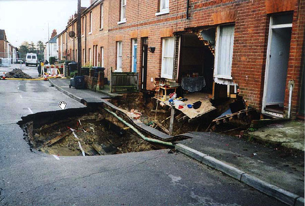

Sunday, October the 28th, 2007
back to: title, date or indexes
Dear Frank, writes Jonathan Coleclough, I recently attended an illustrated lecture at the History of Reading Society on the subject of chalk mining in Reading. I was delighted to see that the first screen of the presentation was a quote about brick manufacture with the single-word attribution “Dobson”. From that point on I was confident I would have a good evening. I wasn't disappointed.
The subject of chalk mining is of interest in this area, as the enclosed photo illustrates.
